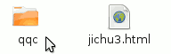
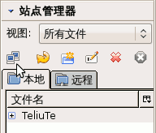
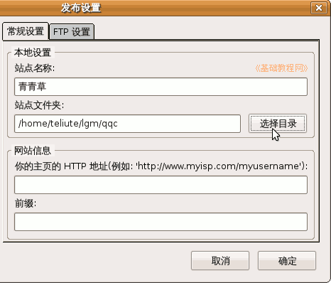
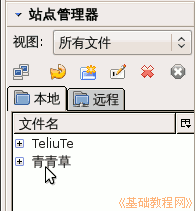

KompoZer 操作基础教程
作者：Teliute 来源：基础教程网
一、新建站点 返回目录 下一课网页的内容除了文字以外，还有图片、音乐、动画等，它们共同构成了一个网站，下面我们来看一个练习；
1、启动KompoZer
1）点左上角菜单“应用程序－编程－KompoZer”，就可以启动KompoZer程序；
2）第一次启动时会出来一个小面板，点关闭即可，然后进入程序窗口中；
2、新建站点1）先在自己的文件夹中，新建一个qqc的文件夹，注意用英文字母；

2）然后在KompoZer窗口的左边栏中点击“编辑网站”按钮，图标是两个电脑，出来一个发布设置对话框；

3）在右边上面输入站点名称“青青草”，这儿是网站的标题，再在下面站点文件夹的右边点“选择目录”按钮，
找到刚才建的qqc文件夹，单击选中，然后点下面的“打开”按钮；

4）网站信息那儿可以空着，检查一下然后点“确定”按钮；
5）回到KompoZer窗口中，左边的网站栏里就有了一个网站，“编辑站点”旁边的按钮分别是“刷新、新建、重命名、删除”，

网站刚建好，里面还没有网页，后面我们会慢慢添加进去；
本节学习了在KompoZer中创建本地站点的基本方法，如果你成功地完成了练习，请继续学习下一课内容；
本教程由86团学校TeliuTe制作|著作权所有
基础教程网：http://teliute.org/
美丽的校园……
转载和引用本站内容，请保留版权信息和本站链接。